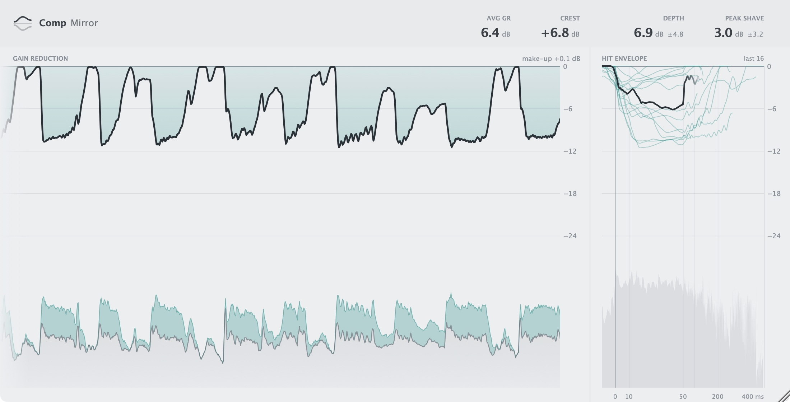

Compression, understood.コンプレッションを
知る。
What your compressor really does to every hit, measured from the sound. Put one Comp Mirror before it and one after. コンプが実際にしていることを、音から測って描きます。コンプの前と後ろに Comp Mirror を 1 つずつ挿すだけです。
macOS 12+ · Apple silicon & Intel · Signed & notarized署名・公証済み

See the gain reduction.GR が見える。
The line comes from the sound, so any compressor shows up the same way, with a meter or without one.音から測るので、メーターの有無を問わず、どのコンプも同じように見えます。
See the hit.コンプのかかり方が見える。
The last 16 hits, lined up where they start: how fast it grabs, how far it goes, how it lets go.直近 16 回の音の立ち上がりを、そろえて重ねます。どれだけ速くつかみ、どこまで下げ、どう戻すか。
Your sound, untouched.音はそのまま。
It measures and passes the audio through as it came. No added latency.測るだけで、音声はそのまま通ります。レイテンシも加えません。
- One-time買い切り
- 5 Macs5台まで
- No subscriptionサブスクなし
- Free updates無料アップデート
Every feature, free for 14 days. No account.
When the trial ends, measuring stops and the sound keeps playing.14日間、すべての機能を試せます。アカウントは要りません。
トライアルが終了すると測定は止まりますが、音はそのまま流れ続けます。
In any DAW that hosts these.これらの形式に対応した DAW で使えます。
Apple silicon & Intel. Signed and notarized.Apple silicon・Intel。署名・公証済み。
The pair finds each other on the track and lines the two sides up.2 つが同じトラックで互いを見つけ、前後のタイミングを合わせます。
Audio is never stored or sent. The only connection is licence activation.音は保存も送信もしません。通信はライセンス認証だけです。